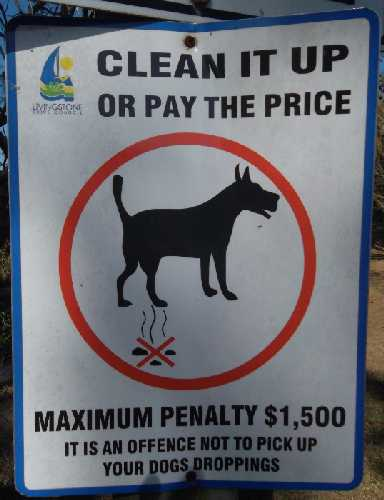

Under council regulations, dogs are required to remain on leads / leashes at
all times on all beaches on the Capricorn Coast, except for before 8 AM or after 4 PM Monday to Friday -
when dogs are allowed off the leash on beaches. Fines can apply for non-compliance (see sign on right).
Given that there are many dozens of miles of deserted beaches here, I believe this is a
ridiculous and overly harsh rule.
Some of the busier beaches on the Capricorn Coast do have
"Dogs must remain on leashes at all times" signs
on them (see sign on right), however most beaches do not have these signs.
A part of Kinka Beach to the south (in the residential area) does have this sign.
However, the main part of Kinka Beach - the long stretch in front of our Kinka Palms Motel -
does not have this sign.
If the council tried to fine someone and this sign wasn't present on the beach where
they had walked their dog, then I do not think this is fair, and I don't see how this could stand up in court.
Dogs are NOT allowed at all on some beaches. e.g. dogs are not allowed on Yeppoon Main Beach.
To avoid fines, keep a look out for these signs.
Bird Sanctuary:
Bird Sanctuary: Kinka Beach is a bird sanctuary for migrating birds, and a sign on the walkways to the
beach tells everyone about this (see picture to the right).
If your dog is a bird chaser, and it is off the leash and running around chasing birds,
then this would increase the chances of you being fined.
Also, if your dog is running around off leash and jumping on / annoying strangers,
then this would probably increase the chances of you being fined.
However, if your dog is off leash and stays reasonably close to you and stays in the
sand / water area (and away from the dunes and other people and birds), then it
should be very unlikely that you would be fined.
Indeed, many dozens of people walk their dogs off leash each day on the main part of
Kinka Beach and we have never heard of anyone being fined or even threatened with a fine.
Clean-up After Your Dog:

Dog owners are required to clean-up after their dogs at all times.
This includes ALL beaches, ALL parks, and it is best to assume
that it also means anywhere else you may walk your dog.
Steep fines can apply for failing to do this on parks and beaches (see sign on the right).
Please make sure that you take doggie poop bags with you at all times and always clean up after your dog. We recommend making the bags really visible. e.g. tie / hang the bag onto the leash so that everyone sees that you are a responsible dog owner.
We have heard of one occassion where council issued a fine to a dog owner at Lammermoor Beach
for not having any "dog poop bags" while walking their dog.
The rationale being "if you don't have dog poop bags, then you can't clean-up after your dog when it poops".
There are "dog poop bag" dispensers at the entrance to some beaches (including the beach access
across the road from Kinka Palms Motel). However, these dispensers are almost always "run out of bags".
It is always best for dog owners to be prepared and bring your own dog poop bags.
The last thing responsible dog owners want is to spoil the beach for everyone else.
Most dog owners are responsible people, sadly not all.